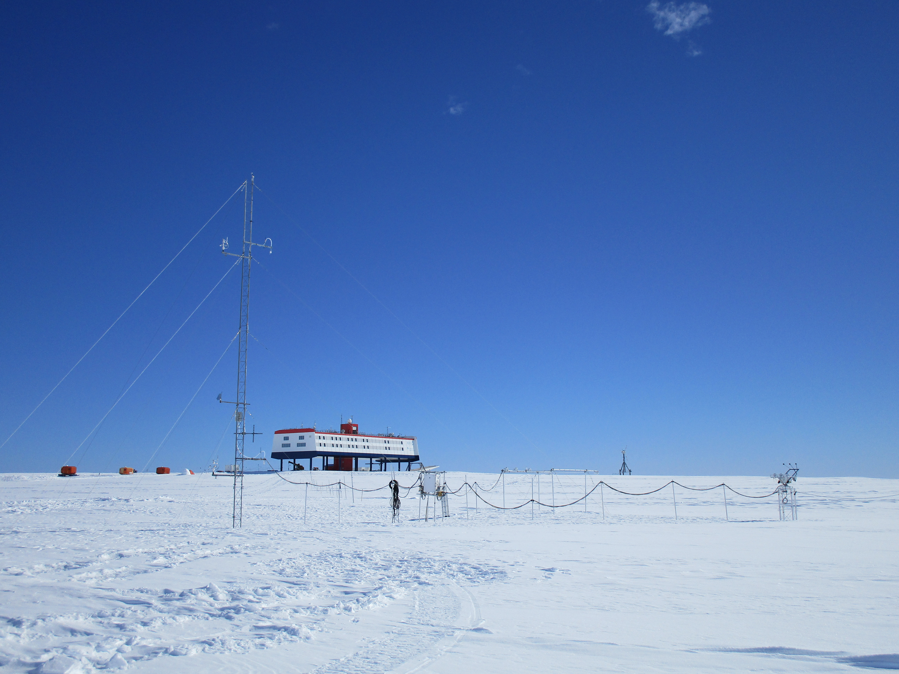

Wetter & Klima verstehen
Warum gibt es Jahreszeiten? Wie erwärmt die Sonne die Luft? Was misst ein Barometer? Und warum ist es an der Küste im Winter milder als in Sibirien? Hier findest du alles zum Kapitel – zum Klicken, Ausprobieren und Nachlesen.
.jpg?width=1200)
.jpg){kind=link}
Wie entstehen die Jahreszeiten?
Die Erde umkreist die Sonne einmal im Jahr auf einer leicht ovalen Bahn. Entscheidend für die Jahreszeiten ist aber nicht die Entfernung zur Sonne – sondern dass die Erdachse um 23,5° geneigt ist, und zwar immer in dieselbe Richtung. Dadurch wandert der Punkt, an dem die Sonne mittags senkrecht steht (der Zenitstand), im Laufe des Jahres zwischen dem nördlichen und südlichen Wendekreis hin und her. Klicke auf eine der vier Erdpositionen:
Einstrahlung: Wie die Sonne die Luft erwärmt
Die Sonnenstrahlen müssen erst durch die mehrere hundert Kilometer dicke Gashülle der Erde, die Atmosphäre. Dabei passiert eine Überraschung: Die Sonne erwärmt die Luft nicht direkt, sondern auf einem Umweg über den Boden. Klicke die Nummern 1–3 an:
Violett = absorbiert (aufgenommen). Gerundete Durchschnittswerte für die ganze Erde. Im Buch heißt es: „nur gut die Hälfte erreicht die Erdoberfläche".
Experiment: Taschenlampe & Einfallswinkel
Wie im Buch (M5): Halte eine Taschenlampe senkrecht, dann immer schräger über Kästchenpapier. Die Lampe gibt immer gleich viel Licht ab – aber es verteilt sich auf unterschiedlich viele Kästchen. Probiere es mit dem Regler aus:
Fachwortschatz zum Lernen: Karten umdrehen
Lies den Begriff, überlege dir die Erklärung – dann tippe die Karte an und vergleiche.
Temperaturen, Wolken & Co. – die Wetterelemente
Meteorolog:innen beschreiben das Wetter mit sechs messbaren Größen, den Wetterelementen. Klicke auf eine Instrumenten-Karte, um mehr zu erfahren:

Wetterstation: viele Messwerte an einem Ort
Am Messfeld der Neumayer-Station werden Wetterdaten auch unter extremen Bedingungen erfasst. Die Messgeräte stehen möglichst frei, damit Gebäude die Werte wenig beeinflussen.
Foto: Messfeld Neumayer, mit Erlaubnis verwendetSo liest man die Karten unten
Jedes Wetterelement beantwortet eine einfache Frage: Wie warm? Wie feucht? Wie windig? Wie stark bewölkt? Für eine Wettervorhersage werden diese Messwerte zusammen betrachtet.
➕ Zusatzwissen: Wie entsteht Regen? Der Weg eines Wassertröpfchens nicht auf der Themenliste
Niederschlag beginnt immer mit Verdunstung. Klicke die Nummern 1–7 der Reihe nach durch:
Wetter und Klima – wo liegt der Unterschied?
Im Alltag werden beide Wörter oft durcheinandergebracht – dabei bezeichnen sie ganz unterschiedliche Dinge.
Wetter
Der Zustand der Atmosphäre an einem Ort zu einem bestimmten Zeitpunkt – also innerhalb von Stunden oder Tagen. Wetter ändert sich ständig.
Klima
Der typische, durchschnittliche Verlauf des Wetters an einem Ort über einen langen Zeitraum (mindestens 30 Jahre). Klima ist ein statistischer Wert.
Schnelltest: Wetter oder Klima?
Arbeiten mit dem Klimadiagramm
Ein Klimadiagramm zeigt auf einen Blick, wie warm und wie feucht es an einem Ort im Jahresverlauf ist. Die rote Linie zeigt die Temperatur (linke Achse, °C), die blauen Säulen zeigen den Niederschlag (rechte Achse, mm). Alle Werte sind Mittelwerte aus mindestens 30 Jahren. Wichtig: 10 °C entsprechen 20 mm Niederschlag. Ab 100 mm kann sich der Maßstab ändern, damit sehr regenreiche Monate noch aufs Diagramm passen – hier (wie beim Vancouver-Diagramm im Buch) entspricht ein Kästchen darüber 100 mm.
So wertest du ein Klimadiagramm aus – in 4 Schritten
Wähle oben einen Ort. Versuche jeden Schritt zuerst selbst (Heft!) und klicke dann auf „Lösung zeigen".
Klimadiagramme zuordnen: Welches Diagramm gehört zu welchem Ort?
Schau dir Temperaturkurve und Niederschlagssäulen genau an. Achte auf: Liegt die Temperatur unter 0 °C? Ist die Kurve flach oder stark gebogen? Gibt es fast keinen Niederschlag?
Maritimität, Kontinentalität & Meeresströmungen
Orte auf gleicher geografischer Breite können ein ganz unterschiedliches Klima haben. Entscheidend ist, wie nah sie am Meer liegen – und ob vor ihrer Küste eine warme oder kalte Meeresströmung fließt.
Maritimes Klima (Seeklima, ozeanisch)
Klima in der Nähe des Meeres, stark vom Meer beeinflusst (lat. mare = Meer).
- milde Winter, kühle Sommer
- kleine Jahrestemperaturamplitude
- viel Niederschlag, über das Jahr verteilt
- Beispiel: Irland, Westküste Europas
Kontinentales Klima (Landklima)
Klima im Inneren großer Kontinente, weit weg vom ausgleichenden Meer.
- kalte Winter, heiße Sommer
- große Jahrestemperaturamplitude
- wenig Niederschlag, meist im Sommer
- Beispiel: Kasachstan, Sibirien
Warum ist das so? Wasser ist ein Wärmespeicher
Reise entlang des 52. Breitengrads: vom Atlantik nach Asien
Alle Orte liegen etwa auf der gleichen Breite wie Hannover. Klicke dich von West nach Ost:
Hannover: Werte aus dem Buch (M6). Andere Orte: gerundete Richtwerte langjähriger Mittel.
Meeresströmungen: die „Warmwasserheizung" Europas
Meeresströmungen sind riesige „Flüsse" im Ozean. Warme Strömungen bringen Wärme aus den Tropen in kältere Gebiete, kalte Strömungen kühlen die Küsten, an denen sie entlangfließen.
Der Golfstrom fließt vom Golf von Mexiko über den Atlantik und setzt sich als Nordatlantikstrom bis nach Norwegen fort. Die Westwinde tragen seine Wärme aufs Land. Deshalb sind die Winter in Nordwesteuropa viel milder als in Kanada auf gleicher Breite.
Januar, warmes Wasser vor der Küste
Januar, kalter Labradorstrom
Karte stark vereinfacht. Temperaturen: gerundete Januar-Mittelwerte.
➕ Zusatzwissen: Welche Faktoren beeinflussen das Klima? nicht auf der Themenliste
Welche Faktoren beeinflussen das Klima?
Warum ist es am Äquator heiß und am Nordpol eisig kalt? Warum sind Winter in Niedersachsen milder als in Kanada, obwohl beide etwa auf gleicher geografischer Breite liegen? Fünf Faktoren spielen zusammen. Klicke eine Karte an:
➕ Zusatzwissen: Die Klimazonen der Erde nicht auf der Themenliste
Die Klimazonen der Erde
Von den Tropen bis zu den Polen ändert sich das Klima mit der geografischen Breite. Für den Unterricht reicht zuerst ein vereinfachtes Modell mit fünf Breitenzonen, die es sowohl auf der Nord- als auch auf der Südhalbkugel gibt.

Erst global orientieren, dann einzelne Orte vergleichen
Die Karte zeigt die Breitenzonen als grobe Orientierung. Innerhalb einer Zone unterscheiden sich Orte trotzdem, weil Meer, Höhenlage, Winde und Meeresströmungen mitwirken.
Karte: PhysicsScotland, Wikimedia Commons, CC BY-SA 4.0.png){kind=link}
Teste dein Wissen
17 Fragen zu allem, was du oben gelesen hast.